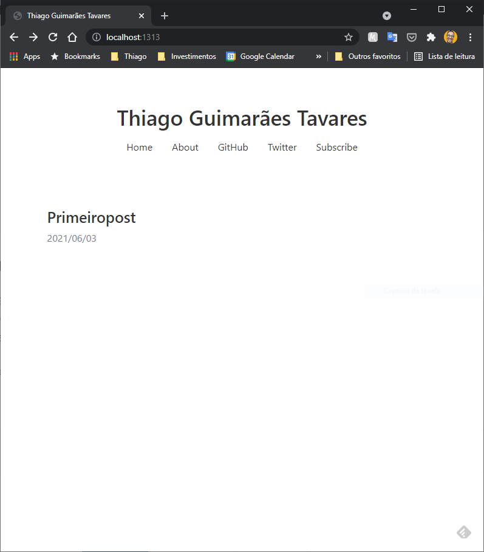
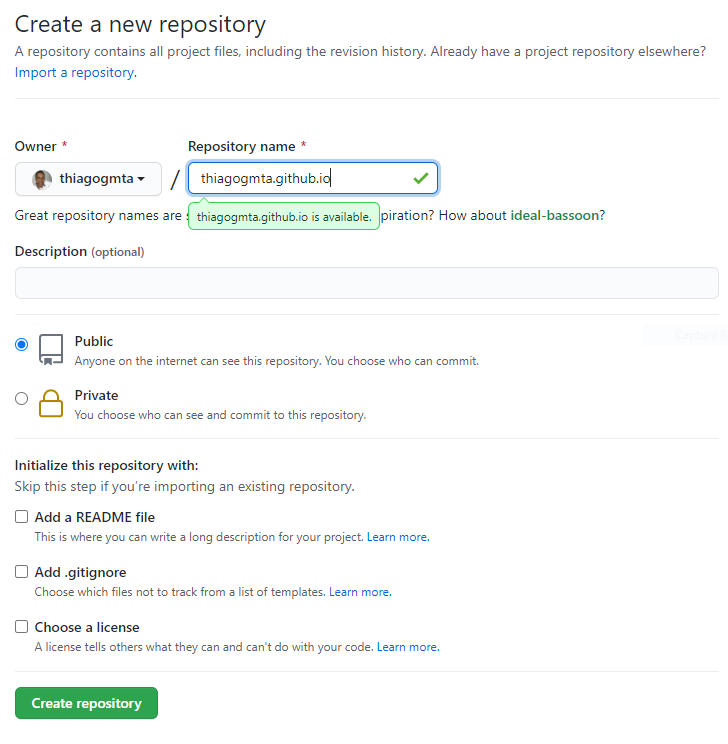
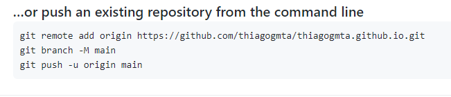

Criando um blog com Hugo e hospedando no github
1. Instalando Dependências
Podemos trabalhar com o Hugo Blog em qualquer sistema operacional, basta apenas instalar os pacotes necessários. Para este guia iremos instalar os seguintes aplicativos:
- Gerenciador de Pacotes
- Homebew para Linux
- Chocolatey para Windows
- Git
- O Git será nosso sistema de controle de versões. É responsável por iniciar nosso repositório e realizar o controle de versão dos arquivos.
- Hugo
- Hogo é um gerador de site. Ele converte nosso artigo escrito em Markdown para paginas html
- Typora
- Utilizaremos o Typora como editor de texto simples. O Typora é um editor markdown Distraction Free (livre de distrações)
A seguir você encontra o processo de instalação de ambos os pacotes para os sistemas Linux e Windows. Realize o processo de instalação de acordo com o seu sistema operacional. A partir do tópico 2 deste artigo os passos são os mesmos para qualquer sistema.
Linux
- Homebrew e git
Instalando Git e dependências:
$ sudo apt-get install build-essential curl file git
Instalando Homebew
$ /bin/bash -c "$(curl -fsSL https://raw.githubusercontent.com/Homebrew/install/master/install.sh)"
Realizando configurações:
$ test -d ~/.linuxbrew && eval $(~/.linuxbrew/bin/brew shellenv)
$ test -d /home/linuxbrew/.linuxbrew && eval $(/home/linuxbrew/.linuxbrew/bin/brew shellenv)
$ test -r ~/.bash_profile && echo eval" ($(brew --prefix)/bin/brew shellenv)" >>~/.bash_profile
$ echo "eval $($(brew --prefix)/bin/brew shellenv)" >>~/.profile
- hugo
$ brew install hugo
Windows
- chocolatey
- Chocolatey é um gerenciador de pacotes para o Windows. Iremos instalar nossas dependências através dele.
- 1 - Abra o prompt de comandos (ou powershell) como administrador. Clique com o botão direito no menu iniciar e selecione Windows PowerShell (Admin).
- Cole e execute o comando a seguir:
> Set-ExecutionPolicy Bypass -Scope Process -Force; [System.Net.ServicePointManager]::SecurityProtocol = [System.Net.ServicePointManager]::SecurityProtocol -bor 3072; iex ((New-Object System.Net.WebClient).DownloadString('https://chocolatey.org/install.ps1'))
Com o chocolatey instalado basta instalar os pacotes a seguir através do Prompt de Comandos (ou PowerShell).
- git
c:\> choco install git
- hugo
c:\> choco install hugo -confirm
- Typora
c:\> choco install typora
2. Criando nosso Blog
A seguir seguem os passos para criação do blog seleção do tema e configurações iniciais.
2.1. Criando o blog
Através do prompt de comandos ou terminal execute:
$ hugo new site thiagogmta
Nesse caso thiagogmta será o nome do diretório onde os arquivos do blog serão instalados. Posteriormente iremos acessar o diretório criado e inicializar o repositório.
$ cd thiagogmta
$ git init
2.2. Selecionando um tema
Existem diversos temas disponíveis para serem usados e você pode conferir a lista completa acessando Hugo Themes.
Para este artigo utilizaremos o Tema Tanka.
Instalação
O procedimento descrito a seguir é padrão para qualquer tema, entretanto alguns temas podem exigir configurações adicionais que normalmente estão descritas na página do tema.
Iremos utilizar o git para clonar os arquivos do tema para dentro do diretório themes em nosso repositório. Para isso iremos executar:
$ git submodule add https://github.com/nanxstats/hugo-tanka.git themes/hugo-tanka
Configuração
Dentro do nosso repositório existe um arquivo chamado config.toml. Esse arquivo possui as configurações do nosso projeto. Na pagina do tema existem algumas instruções sobre quais informações devem ser inseridas. Altere o arquivo de forma a se a presentar conforme a baixo:
baseURL = "https://example.com"
languageCode = "pt-br"
DefaultContentLanguage = "pt-br"
title = "Thiago Guimarães Tavares"
theme = "hugo-tanka"
enableEmoji = true
pygmentsstyle = "vs"
pygmentscodefences = true
[params]
sitename = "Thiago Guimarães Tavares"
faviconfile = "images/favicon.png"
highlightjs = true
highlightjslanguages = ["r", "python", "stan"]
uselatex = true
[[menu.primary]]
name = "Home"
url = "/"
weight = 1
[[menu.primary]]
name = "About"
url = "/about/"
weight = 2
[[menu.primary]]
name = "GitHub"
url = "https://github.com/nanxstats"
weight = 3
[[menu.primary]]
name = "Twitter"
url = "https://twitter.com/nanxstats"
weight = 4
[[menu.primary]]
name = "Subscribe"
url = "/index.xml"
weight = 5
2.3. Criando o primeiro post
Dentro do repositório execute o comando:
$ hugo new primeiropost.md
Algumas considerações:
- hugo new post - Comando responsável por criar o post
- primeiropost.md - Nome do arquivo.
- Procure não utilizar espaços
- A extensão deve ser .md
Iremos agora utilizar o Typora para fazer a edição do post criado. Abra o Typora e carregue o arquivo primeiropost.md.
- Arquivo abrir.
- <diretório do repositório>/content/posts/primeiropost.md
Dentro do arquivo você iremos nos deparar com alguns dados iniciais. Altere as informações conforme a seguir:
---
title: "Criando meu Primeiro post"
date: 2021-06-03T10:26:04-03:00
draft: false
---
Este é meu primeiro post utilizanod Hugo Blog!
## Sobre este post
É apenas um post de teste
Observação:
O parâmetro draft define se o post irá estar visível ou não.
draft: false - Post ficará visível
draft: true - Post não será exibido
Essa função serve para você definir quais posts devem ser exibidos sem excluir arquivos que você ainda quer manter.
2.4. Testando
Para testar nosso projeto execute no prompt ou no terminal (na raiz do diretório do projeto):
$ hugo server
Você deve receber uma mensagem como a seguir:
Start building sites …
| PT-BR
-------------------+--------
Pages | 7
Paginator pages | 0
Non-page files | 0
Static files | 2
Processed images | 0
Aliases | 0
Sitemaps | 1
Cleaned | 0
Built in 20 ms
Watching for changes in C:\Users\thiag\Dropbox\thiagogmta\{archetypes,content,data,layouts,static,themes}
Watching for config changes in C:\Users\thiag\Dropbox\thiagogmta\config.toml
Environment: "development"
Serving pages from memory
Running in Fast Render Mode. For full rebuilds on change: hugo server --disableFastRender
Web Server is available at http://localhost:1313/ (bind address 127.0.0.1)
Press Ctrl+C to stop
Basta abrir o navegador de internet e digitar: http://localhost:1313.
Eis o resultado:

3. Enviado os arquivos para o github
Acesse sua conta e crie um repositório conforme: <seu_usuario>.github.io. No meu caso thiagogmta.github.io. Observe a seguir:

Ao criar o repositório algumas informações para enviar os arquivos serão apresentadas. Para este caso utilizaremos as instruções a seguir:

Dessa forma abra seu terminal e execute (altere a primeira linha conforme o link do seu repo):
$ git remote add origin https://github.com/thiagogmta/thiagogmta.github.io.git
$ git branch -M main
$ git add .
$ git commit -m "Meu primeiro commit"
$ git push origin main
Seu nome de usuário e senha do github serão solicitados. Por fim os arquivos serão enviados ao github.
Configurando a Integração entre Hugo e Github
Precisamos criar um arquivo de configuração que intermedia a integração entre Hugo e Github. Crie o arquivo gh-pages.yml dentro do diretório do seu projeto. Neste caso: /thiagogmta/.github/workflows/gh-pages.yml.